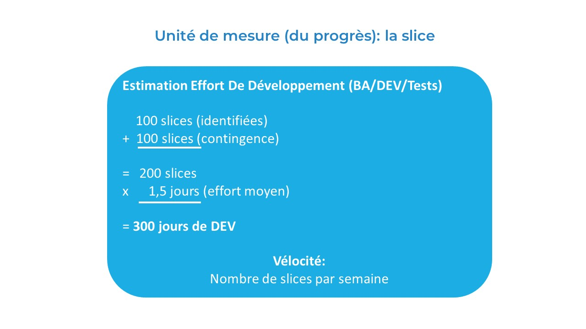

Gestion de Projet - Slice: nouvelle unité de mesure
Introduction
La gestion de projet avec Event Modeling va devenir bien plus simple: l'unité de mesure devient la slice. Par design, une slice est petite, livrable, testable et elle apporte de la valeur métier. Une estimation d'effort est entre 1 et 2 days, qualité production.
Slice: la nouvelle unité de mesure de progrès
- Simple calcul: estimer le nombre de slices grâce aux ateliers d'Event Modeling
- Si vous avez découvert 100 slices, une première estimation en fonction des ateliers serait de 200 slices
- 200 slices x 2 jours = 400 jours
- Dès que le premier processus (châpitre) est défini, implémentez
- Comme l'architecture logicielle est basée sur Vertical Slice Architecture, il n'y a pas de phase de design importante pour la plupart de vos projets
- Les tests: incluent dans les slices - les GWT, Given When Then tests - Spécification par l'exemple
- NB: une slice est toujours une user story and couvre les 3C: Carte, Conversations, Confirmation (GWT tests)
Étapes Clés
- Modéliser les premiers processus (chapitres)
- Implémenter un premier chapitre
- Intégrer les retours des métiers
- Répéter
Outils Recommandés
- Miro / Mural / etc.
- Avancement: marquer les slices en cours et implémentées
- JIRA: pas nécessaire